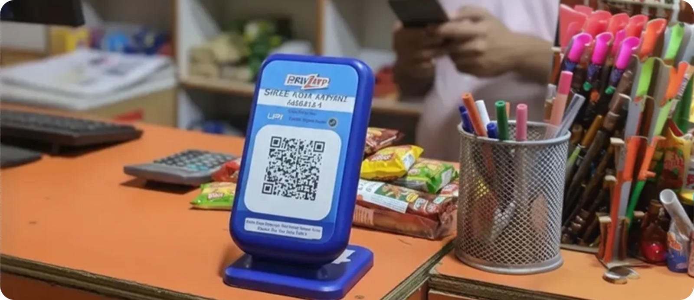
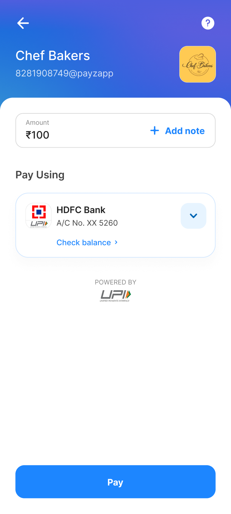
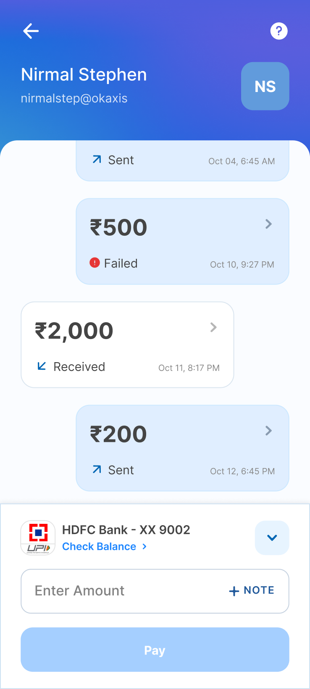
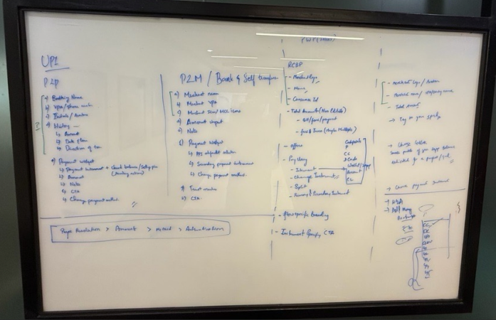
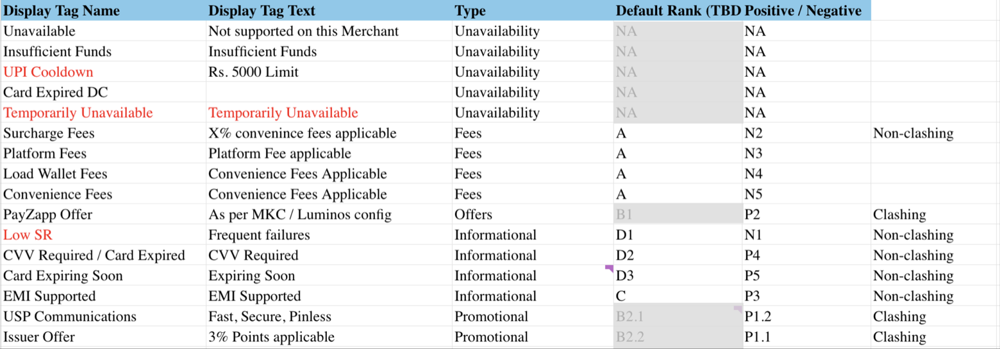
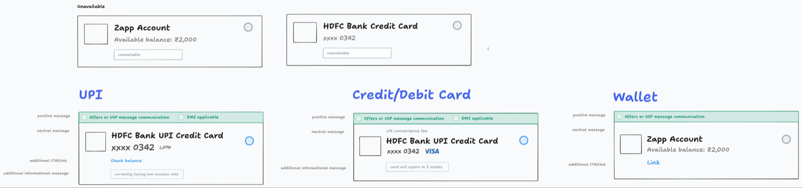
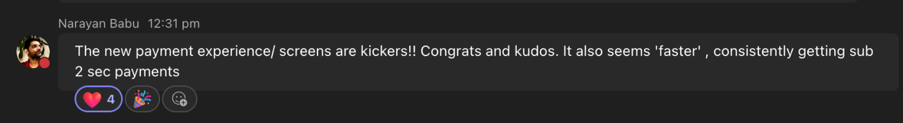

Rebuilding the UPI payments experience on PayZapp
Focus: Payments architecture · Interaction design · Cross-team systems

Overview
Over the years, PayZapp had grown feature by feature into a full digital payments platform: UPI transfers, bill and credit card payments, FASTag, shopping. By early 2025 it had ~15 million users onboarded and [X] daily transacting users.
But every payment vertical had grown up separately. I led the initiative to unify how paying works across the app, starting with its highest-traffic flow: UPI.
Worked with payments teams across multiple lines of business, I mapped how every payment type actually works, defined a shared structural model for all of them, and designed and shipped the redesigned UPI experience (P2P and P2M) built on that model.
The Background
In early 2025, the PayZapp team was working on multiple threads to power up the app experience. With almost 15 million users onboarded and [X] daily transacting users:
-
Scale has reached its height.
Decisions that were fine at launch scale are now shaping millions of payment moments a day. Hence, rethinking is definitely needed
-
A new visual language on the way.
Simultaneously, we were experimenting with a refreshed look and feel for the app. Rather than repainting old structures, it felt like the right time to pause and reconstruct the design principles underneath them.
-
An engineering tailwind to improve the performance.
The engineering team was also running a performance initiative to cut payment processing time. A faster backend deserved a front end that felt as fast as it was.
All these factors combined felt like a right moment to have UPI payments overhaul
The Problems
1 Different by default
For years, the priority had rightly been — make it work. Each type of payment module was built and patched as the need arose — and the seams were showing. Peer-to-peer (P2P) and Peer-to-merchant (P2M) in particular had drifted far apart: different hierarchies, different ways to enter a payment, a fresh learning curve for the same basic act of paying someone.


2 Chunky & dated
And the visuals had aged with the architecture — right down to the chunky yellow processing screen that had quietly become how users remembered paying on PayZapp. That was the memory we wanted to change.
Discovery
Getting every payment type onto one table
It started at a whiteboard, with every payment module in the room
Redesigning screens without understanding the system would have just produced a prettier version of the same fragmentation. So before any UI, I brought the design owners of Shop, RCBP and Zapp Account together and we mapped how each payment actually works — every data point, every difference, side by side on one board.
Rather than treating each payment type as a screen, we decomposed each one into its underlying data points and lined them up in columns: UPI (P2P and P2M), RCBP, Shop.

Reading across the columns, a shared spine appeared:
Every payment on PayZapp, no matter the module, reduced to these four moves. Everything else was context-specific fill.
That map stopped being a research artifact and became the contract for the whole redesign — a structural agreement every team could build against, and the reason a UPI redesign could scale to the entire platform later.
Structuring the page in grayscale first
Once we aligned on the data parameters, the next question was "can one hierarchy genuinely hold P2P, P2M, RCBP and Shops payments?"
and this got us to the start with wireframes holding the structure
The pivotal decision — a two-step flow
With a basic page architecture in place, the hardest debate was information flow. The existing flow put everything on one level. We were considering splitting it into two deliberate steps: the user enters the amount first; instruments appear on the next tap.
I did some competitor research to check what information flow others are following and assumed few why's as to their approaches.
Conceptual Prototype
Validating before going deep
Testing the flow at concept level meant we could iterate fast and cheap, catch structural problems before they got expensive, and only then go deep into each element.
Stakeholders approved an experience, not static screens — and engineers had a living reference for how transitions should behave.
Our interaction design principles for the flow:
- Seamless by default — every tap should feel smooth and continuous, never abrupt
- Follow the intention — whether glancing at history, changing instrument or proceeding to pay, the flow carries the user forward, never bounces them back
- Context without detours — supporting information (like payment history) appears in place, without leaving the flow
Designing the details
With the concept approved, I went element by element through every data point — grounded in user behaviour, competitor research and our data.
Payment entry
the smallest details make the biggest difference
The most-used field in the app. Micro-interactions here compound across millions of daily payments.
Edge states
validation that guides, not scolds
The entry screen had to gracefully absorb everything real usage throws at it — an amount above the permitted limit, amounts beyond available balance, invalid or out-of-range values.
Payment instrument selection
designing for the worst three seconds
The selector had to feel effortless and stay logically scalable across every payment category. Working with my PM, I mapped the data points that define each category — UPI accounts, credit/debit cards, wallets — and which of them actually drive a user's choice, before designing a single card.


From Processing payment to Successful completion — a quick win
The complete payments revamp had a significant runway to go-live. Rather than wait, I carved out a self contained slice — the processing and success screens and we ran it as a sprint.
1 Day - design to dev handoff
1 Week - built, tested, live
Special thanks to Ishant, our motion designer who helped in bringing this vision to life.
